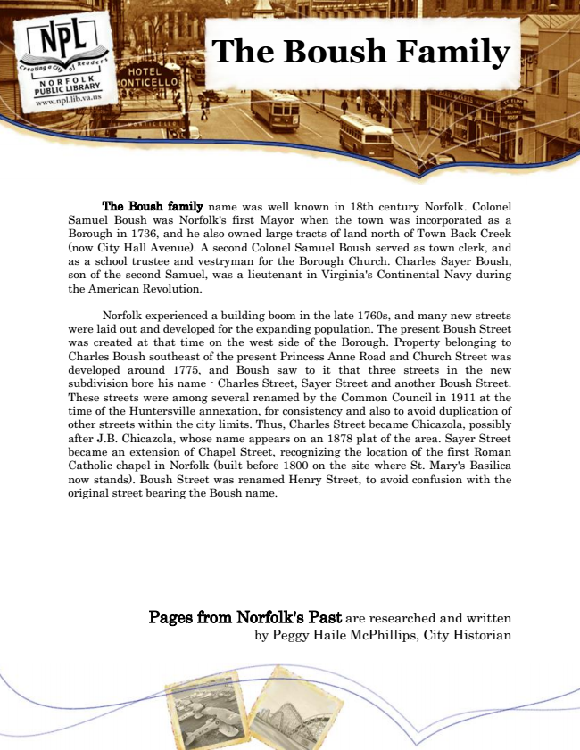

The Boush Family
The Boush family name was well known in 18th century Norfolk. Colonel Samuel Boush was Norfolk's first Mayor when the town was incorporated as a Borough in 1736, and he also owned large tracts of land north of Town Back Creek (now City Hall Avenue). A second Colonel Samuel Boush served as town clerk, and as a school trustee and vestryman for the Borough Church. Charles Sayer Boush, son of the second Samuel, was a lieutenant in Virginia's Continental Navy during the American Revolution.
Norfolk experienced a building boom in the late 1760s, and many new streets were laid out and developed for the expanding population. The present Boush Street was created at that time on the west side of the Borough. Property belonging to Charles Boush southeast of the present Princess Anne Road and Church Street was developed around 1775, and Boush saw to it that three streets in the new subdivision bore his name - Charles Street, Sayer Street and another Boush Street. These streets were among several renamed by the Common Council in 1911 at the time of the Huntersville annexation, for consistency and also to avoid duplication of other streets within the city limits. Thus, Charles Street became Chicazola, possibly after J.B. Chicazola, whose name appears on an 1878 plat of the area. Sayer Street became an extension of Chapel Street, recognizing the location of the first Roman Catholic chapel in Norfolk (built before 1800 on the site where St. Mary's Basilica now stands). Boush Street was renamed Henry Street, to avoid confusion with the original street bearing the Boush name.
Pages from Norfolk's Past are researched and written by Peggy Haile McPhillips, City Historian